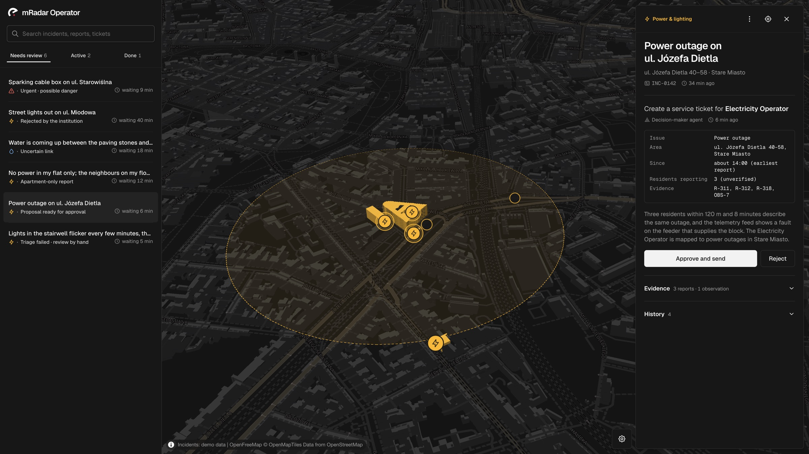
The city, listening.
Residents report what's broken. Officials see the whole picture. Institutions fix it. All on one live map of Kraków.
HackYeah 2026 · Open Task: Smart City
The problem
Residents can't see what's already been reported, so they report it again — or give up.
City officials sort duplicates by hand and guess who's responsible.
Institutions hear about it last, and nobody hears back from them.
02
How it works
01 · mradar /
Residents
Drop a pin, say what's wrong, send. Then follow the fix on the map.
02 · /operations
City officials
Reports arrive grouped into incidents, with a ticket already drafted. One click approves it.
03 · /institution
Institutions
The utility gets the ticket, updates its progress, and every resident sees it move.
03
For residents
A live heatmap shows where problems cluster. Zoom in and every report snaps to the building or road it's about. Already reported? Tap “I'm affected too.”
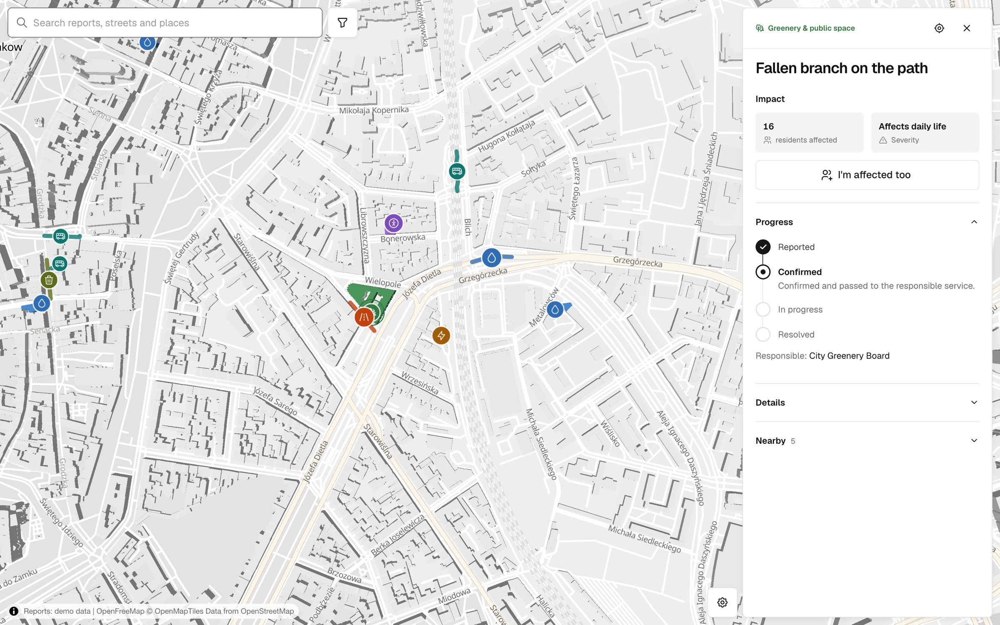
Reporting
Drop the pin. Move the map until it sits on the exact spot, or use your location.
Say what's wrong. Pick one of eight categories and how serious it is.
Send. Your report joins the map and you can follow every step of the fix.
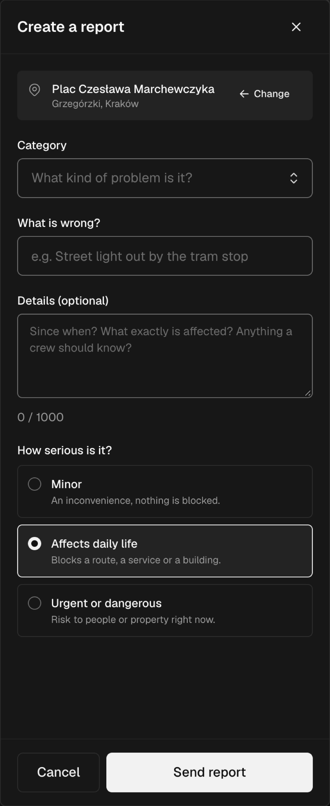
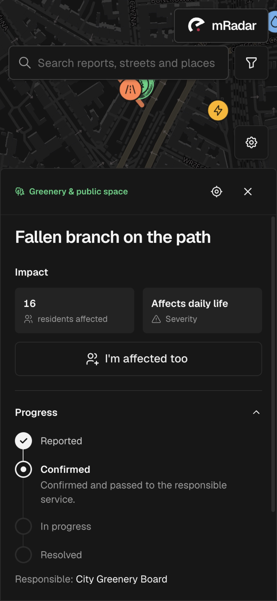
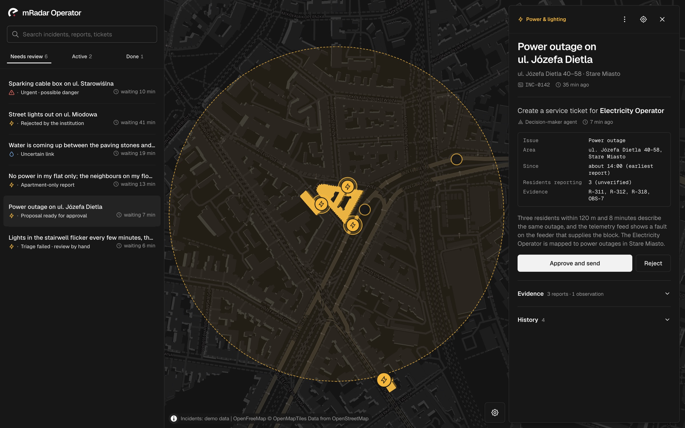
For city officials
Reports close in place and time are grouped. An agent drafts the ticket with its evidence. A person approves before anything is sent.
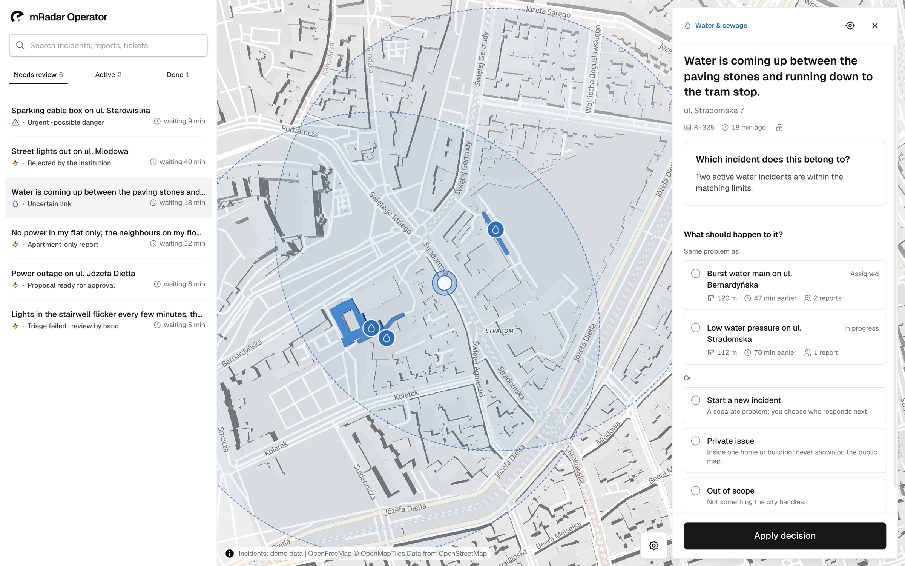
Review
Not sure it's the same problem? Compare the candidates side by side: how far, how long ago, how many reports.
Only inside one flat? Keep it private. It never reaches the public map.
Two people at once? Every decision carries the version it was made on. A stale view refreshes; it never overwrites.
07
For institutions
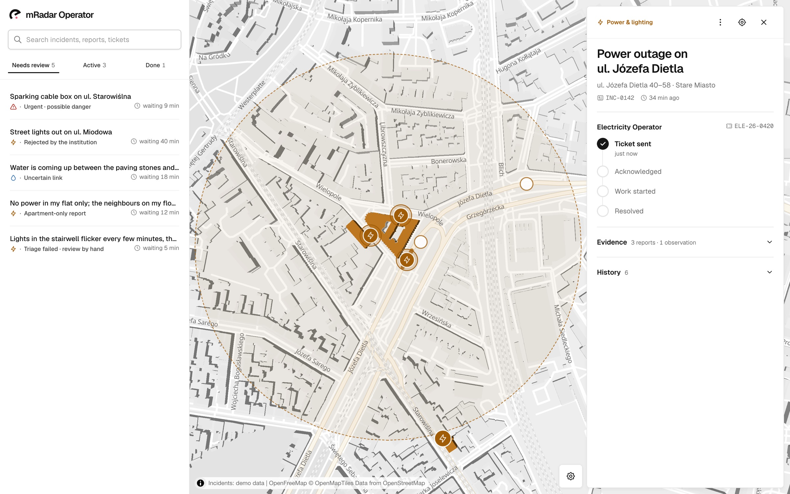
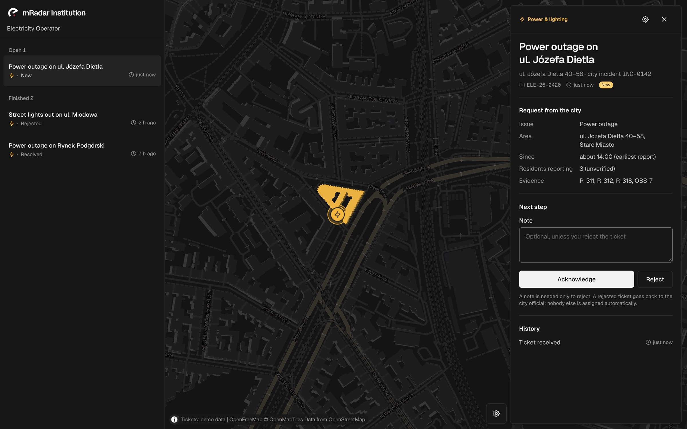
Operator · ticket ELE-26-0420 sent to the Electricity Operator
Institution · same ticket, ready to acknowledge
08
Design
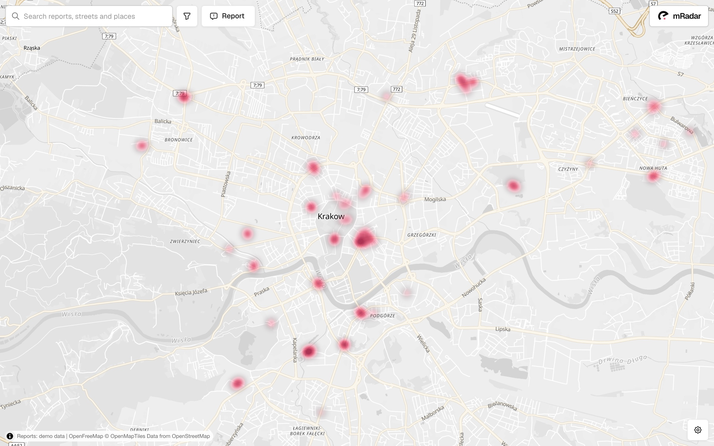
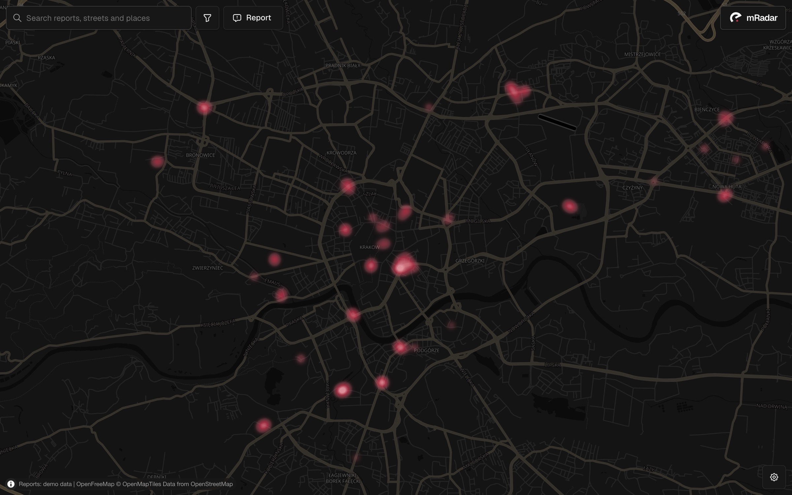
Light Dark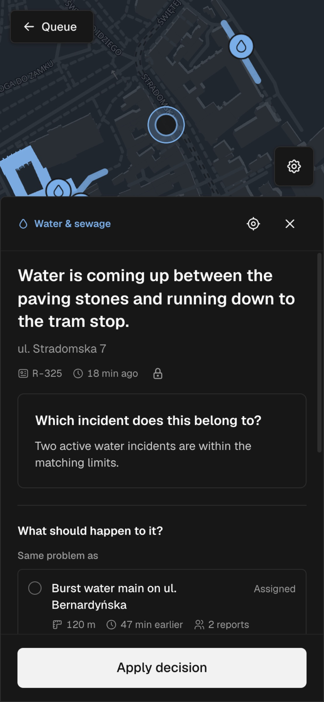
09
Under the hood
Three working screens for residents, officials and institutions.
Light and dark, desktop and phone, keyboard friendly.
One command runs every view on demo data, no backend needed.
Built with the help of AI coding assistants. Institutions, reports and tickets shown are fictional demo data.